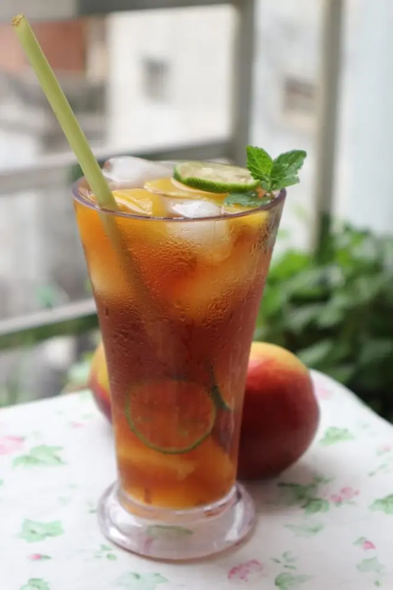
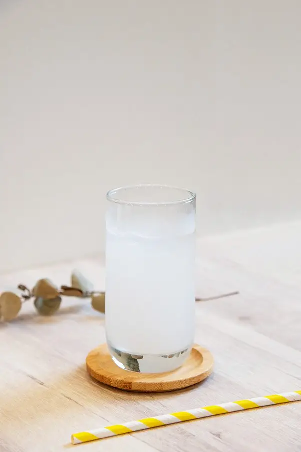
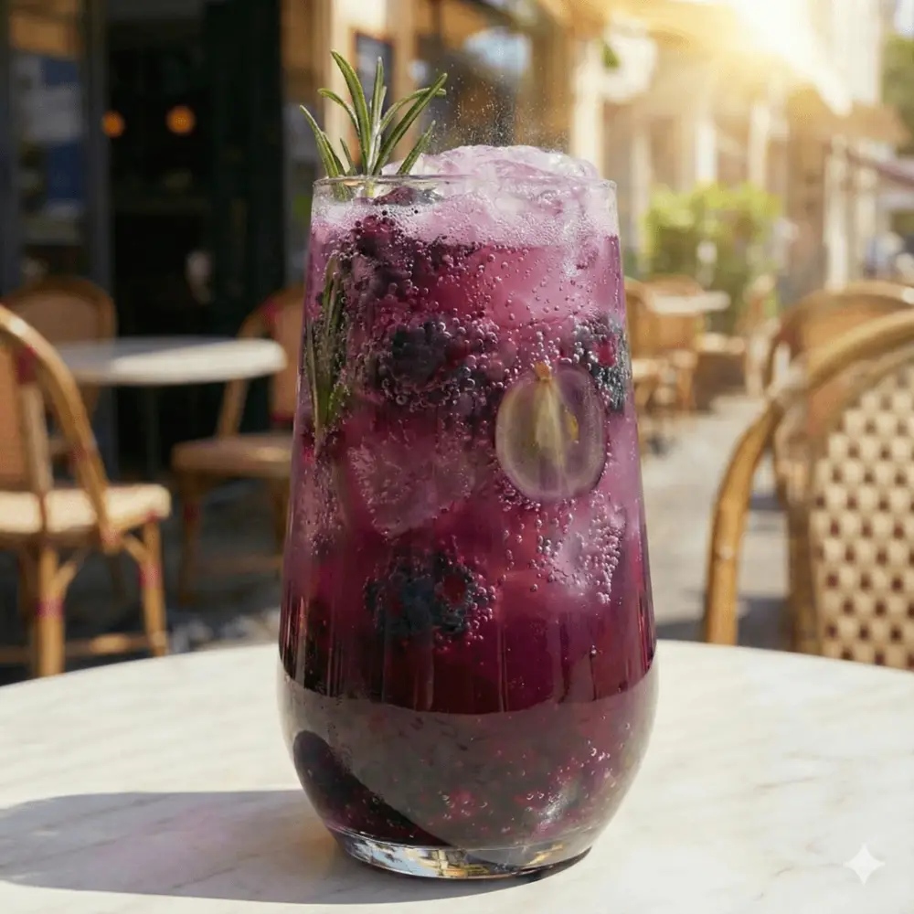

文章 / 飲品配方與資訊
Get ready for springtime with our fruity bubbly refreshers!
這篇是英文原文，尚未完成繁體中文翻譯。中文選單與相關商品連結不會切回英文介面。

查看英文原文（尚未翻譯）
Since we’re nearing the end of the year, that means spring is just around the corner! Want to throw a New Year party with family and friends, or enjoy the springtime on your patio? Our fruity bubbly refreshers are the perfect drinks!

What are refreshers?
Coffee and tea used to be the bread and butter for any cafe, but people started seeking lighter, caffeine-free options to quench their thirst. The answer? Refreshers!
To put it simply, refreshers are light, fruity drinks which are often made with sparkling/soda water. Think lemonades, but with different fruit combinations.
The concept is nothing new of course, but the term itself was coined by (who else?) Starbucks back in 2012. Other cafes soon followed suit, often putting their own spin by offering more exotic flavours, or adding “better for you” ingredients to their drinks.
How do you make it?
The usual way to make refreshers is simple – add fruit juices or syrups to some soda water, add ice cubes and you’re done!
But what if you don’t have any soda water on hand? That’s where we step in! Simply mix our fruity refresher powders with water, and you’ll have a glass of fizzy, bubbly goodness in no time!
For best results, add the ice cubes and powder first before adding the water. Your refresher will stay bubbly for longer!

Available flavours
Peach
With a light, sweet flavour and a bit of fizz, a peach refresher is the perfect springtime drink.
Pair it with some coconut jelly, or add some fruit slices!
Calpis
Have you heard of Calpis? This yogurt-like milk beverage is popular in Japan, Taiwan and other Asian countries.
With a bit of sweet, tart and fizzy, no wonder it’s a hit!
Lime
A bit of zest goes a long way! Getting tired of the usual lemonade? Try a bit of extra fizz with our lime refreshers.
Add some crystal boba for some extra texture!
Yuzu sake
Despite the name, this drink doesn’t actually contain alcohol – safe for teetootalers to drink.
Enjoy a fizzy tipple with a dash of Japanese flair, without worrying about hangovers!
Grape
Have a sweet tooth? Our grape refresher is for you! The fizziness balances out the sweetness from the grapes, leaving you ready for more.
Try pairing it with some popping boba, or some crystal boba!
Green grape
Compared to its red-hued bretheren, green grapes feature a lighter, more aromatic taste.
Take a sip, tingle your tastebuds and watch your thirst bubble away!

Check it out!
Want to add refreshers to your menu? Contact us to pick up the ingredients!